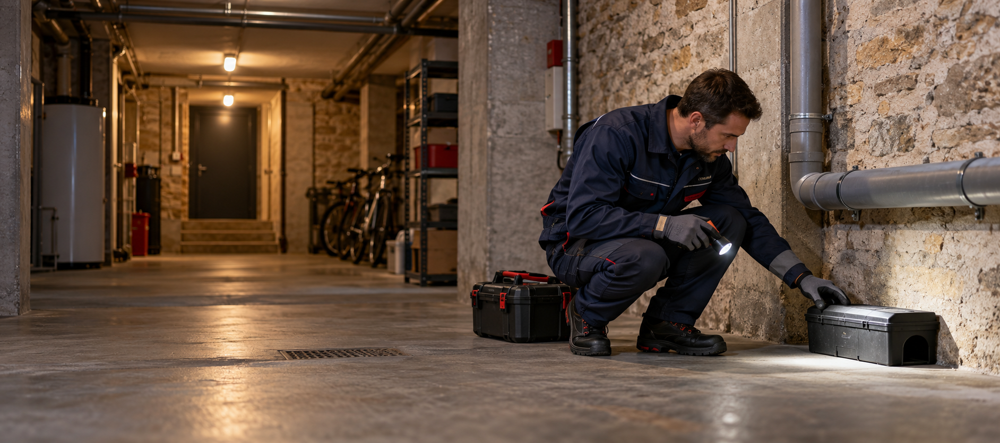
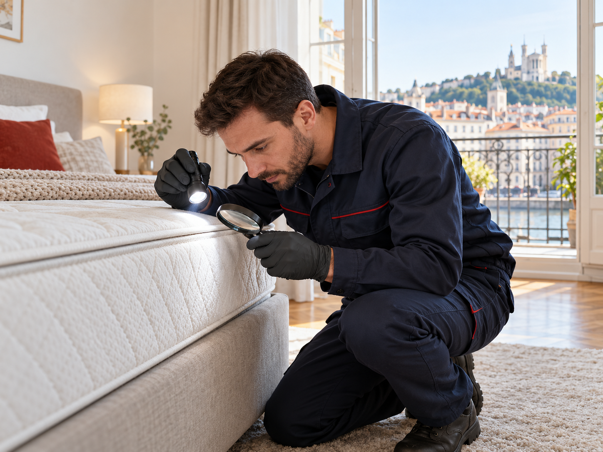
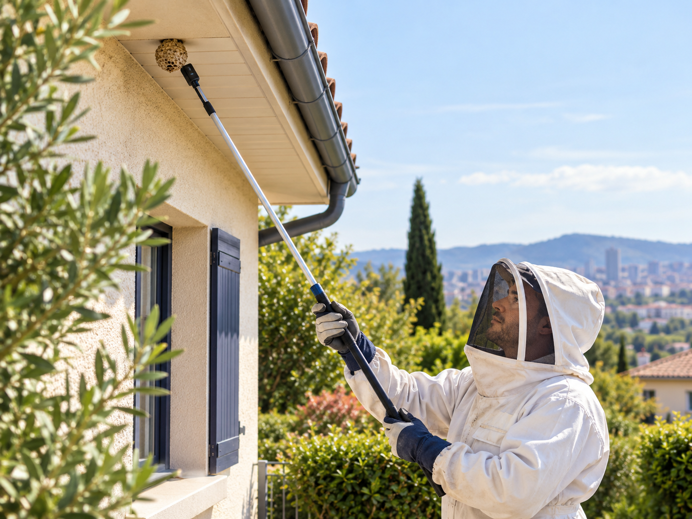

01
Rats & souris
Diagnostic des passages, postes sécurisés, contrôle et conseils de prévention.
Découvrir la dératisation →
Rats, souris, cafards, punaises de lit, guêpes ou frelons : une réponse rapide et un protocole adapté à votre situation.
Nous traitons la cause, sécurisons les accès et vous donnons les bons réflexes pour éviter une nouvelle infestation.
Diagnostic des passages, postes sécurisés, contrôle et conseils de prévention.
Découvrir la dératisation →
Inspection minutieuse et protocole adapté au niveau d'infestation.
Voir le traitement complet →Traitement discret pour logements, commerces et cuisines professionnelles.
Voir la désinsectisation →
Mise en sécurité et traitement du nid selon son emplacement et son accessibilité.
Voir la destruction de nid →Une intervention sérieuse commence par l'identification du nuisible et de son point d'entrée. Le traitement vient ensuite, avec un suivi adapté.
Vous décrivez les signes observés et pouvez transmettre des photos pour orienter le diagnostic.
Recherche des traces, accès, nids et facteurs favorisant la présence des nuisibles.
Mise en œuvre d'un protocole proportionné, avec consignes claires pour les occupants.
Suivi selon la situation et recommandations pour limiter durablement le risque de retour.
Pour un rongeur aperçu, un nid actif ou une infestation qui s'étend, demandez une prise en charge rapide dans la Métropole de Lyon.
Appeler le 07 76 47 12 09Une couverture locale pensée pour limiter les délais de déplacement et intervenir rapidement, chez les particuliers comme chez les professionnels.
Du centre de Lyon à l'Est lyonnais, du Val de Saône à l'Ouest lyonnais.
Lyon 1er à 9e · Villeurbanne · Caluire-et-Cuire · Bron · Vénissieux · Vaulx-en-Velin
Décines-Charpieu · Meyzieu · Chassieu · Saint-Priest · Mions · Corbas · Feyzin
Tassin-la-Demi-Lune · Écully · Francheville · Sainte-Foy-lès-Lyon · Oullins-Pierre-Bénite · Saint-Genis-Laval
Rillieux-la-Pape · Sathonay · Fontaines-sur-Saône · Neuville-sur-Saône · Genay · Montanay
Interventions ponctuelles ou suivi préventif pour les établissements recevant du public et les parcs immobiliers.
Oui, les demandes urgentes sont prises en charge 7j/7 selon les disponibilités des équipes et la nature du problème.
À Lyon, Villeurbanne et dans l'ensemble de la Métropole de Lyon. Indiquez votre commune lors de la demande pour confirmer le délai.
Cela dépend du nuisible, de l'étendue de l'infestation et du lieu. Certains protocoles nécessitent un contrôle ou un second passage.
Les consignes de sécurité sont expliquées avant chaque intervention. Elles varient selon le produit et la méthode retenus.
Pour une urgence ou organiser une intervention à Lyon, Villeurbanne et dans toute la Métropole, appelez-nous directement 7j/7.
07 76 47 12 09